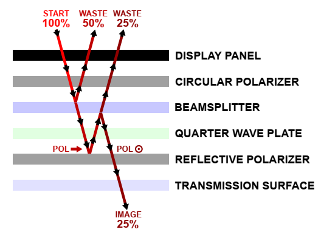
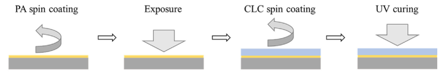
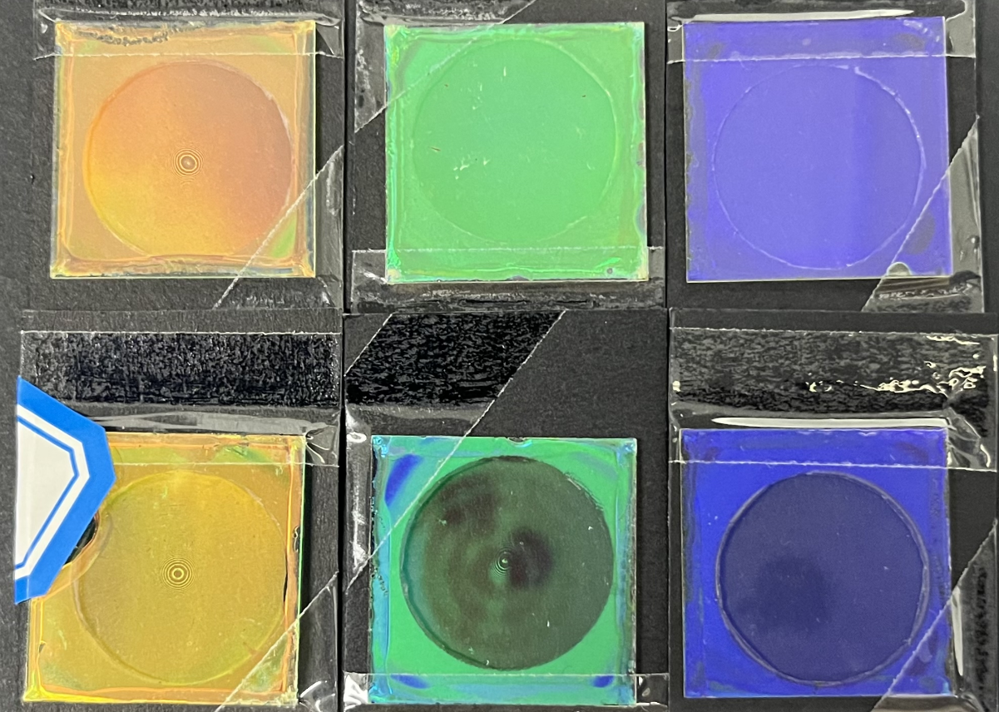
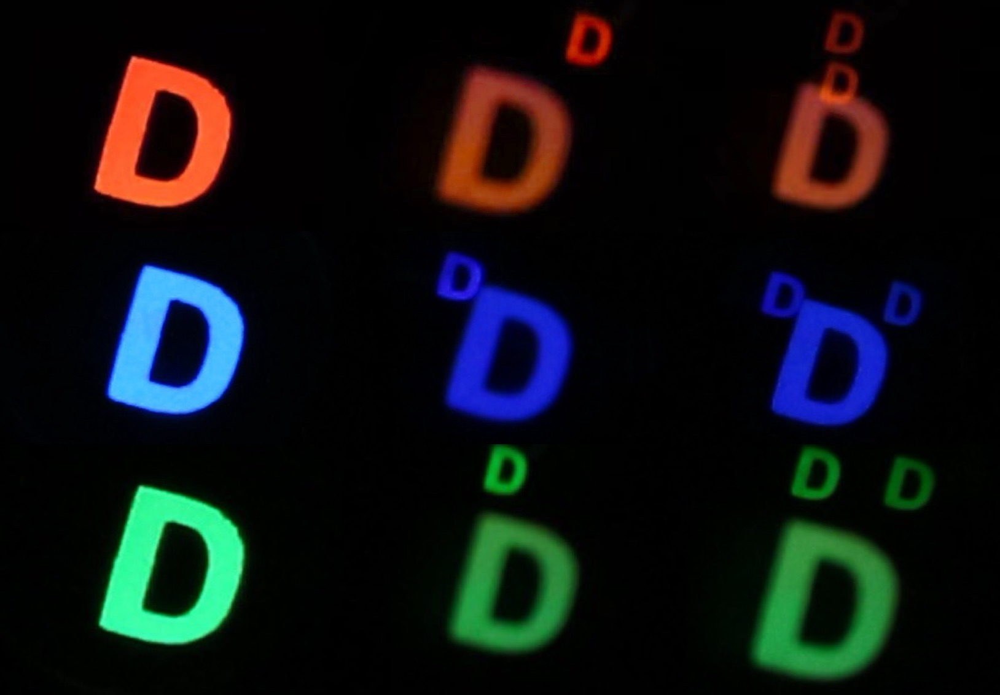
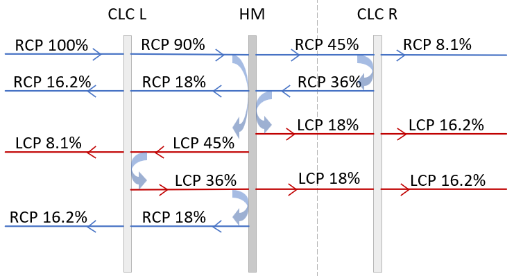
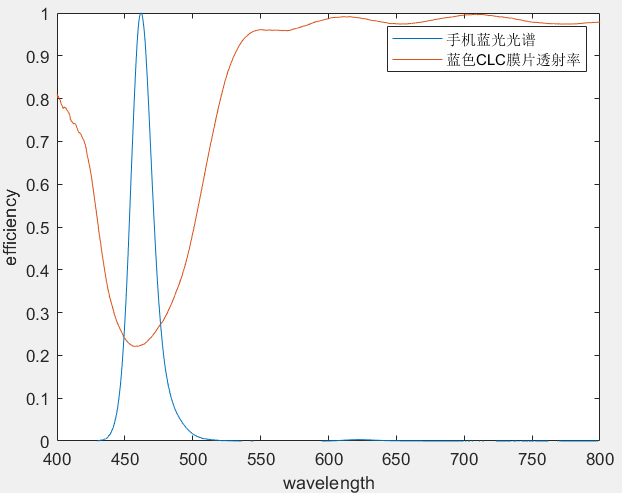
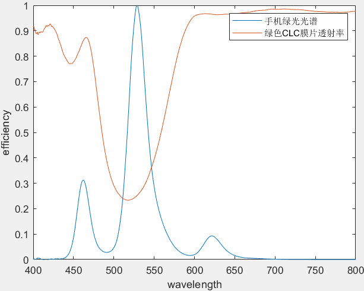
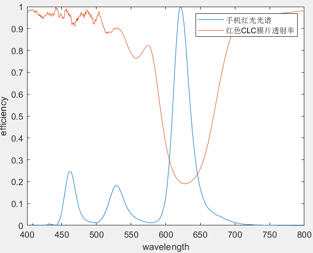

High-efficiency Folded Optics for Near-eye Displays
Background
The optical display performance of near-eye display systems is mainly related to the focal length of the optical components, that is, the distance between the display panel and the focusing element. A longer distance generally leads to better performance, but it also means an increase in the overall size of the display system.
For near-eye display systems such as AR and VR glasses, we aim to achieve high optical performance. However, for the sake of comfort and portability, we also want to minimize the device size, reduce its weight, and lower power consumption.

Traditional Pancake structure
3× optical path length
25% of the theoretical maximum optical efficiency
Proposed Pancake structure
2× optical path length
50% of the theoretical maximum optical efficiency

CLC Elements
As you can see in the improved Pancake architecture we designed, we use CLC elements to design the reflective layer.
The CLC element reflects circularly polarized light matching its chiral handedness within the reflection bandwidth, while transmitting circularly polarized light with the opposite handedness. The polarization state of both reflected and transmitted light remains unchanged.
Fabrication steps of the CLC element

CLC elements

Construction of the Folded Optical System
The following considerations are taken into account in the practical construction of the folded optical system:
-
1
To facilitate the evaluation of experimental results, the experimental setup is scaled up to simplify construction and measurement.
-
2
Considering the impact of chromatic aberration on the results, this experiment focuses on implementing an imaging system using three monochromatic channels: red, green, and blue.

Folded Optical Path Imaging
The left images show imaging of the original light source.
The middle images show imaging using the corresponding color CLC elements.
The right images show the imaging results when the two optical paths are not properly aligned.

Analysis
The percentage assumptions are based on measured optical efficiency.
The CLC elements are assumed to have a reflectivity of 80% and a transmittance of 20%. In addition, all transmitted light experiences a 10% loss. Based on these parameters, the light loss analysis is illustrated below.
Light loss analysis

From the resulting images, it can be observed that when the two optical paths are not properly aligned, the intensities of the two small "D" images are approximately equal, which verifies the validity of the proposed folded optical design.
An OLED smartphone display is used as the light source, with RGB grayscale values of (255, 0, 0), (0, 255, 0), and (0, 0, 255). However, the measured emission spectra are not monochromatic and exhibit finite bandwidths. A comparison between the normalized RGB spectra of the display and the transmission spectra of the corresponding CLC elements shows that a significant portion of light is still transmitted.
Comparison between the normalized RGB spectra of the display and the transmission spectra of the corresponding CLC elements

(a) blue

(b) green

(c) red
As a result, transmission leads to a brighter large "D" in the imaging results. Nevertheless, the brightness ratio between the large "D" and the small "D" remains within a reasonable range.